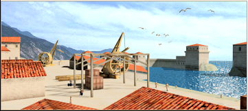

RTR: Imperium Surrectum
RTR: Imperium SurrectumHarbour Improvement
A single-level building: there is nothing to upgrade it into.
Harbour Improvement

This building allows constructing one level above the max natural port level.
Sometimes nature does not provide what we need, and in such cases the ingenuity of man must make up the difference. Safe harbours near places of production are essential for our commerce, as secure naval bases are to our projection of power. So, for coastlines that lack good, or any, natural harbours we need to help nature by constructing artifical moles and breakwaters jutting out to carve out a safe refuge from the hostile sea. Of course this will be costly, but the trade profits should hopefully make it worthwhile.
Strategy
This building allows constructing one level above the max natural port level. See the region information scroll or the building browser to see what level of port this region can reach without the Harbour improvement. Note: This building will be automatically destroyed after construction is completed.
| Cost | 10,000 denarii | Build time | 6 turns | Minimum settlement | large town |
Requirements — all of these must hold before this level can be built.
- any faction
port- the region does not have the hidden resource
nobuild(nobuilding) - Government Building
- River Ports at River Ports or above is not built here (
not_river_port) - the region does not have the hidden resource
harbour_constructed(not_harbour) - not: the region has the hidden resource
base_port_level_0and Trade Port at Trade Port or above is built here and not: the region has the hidden resourcebase_port_level_1and Trade Port at Shipwright or above is built here and not: the region has the hidden resourcebase_port_level_2and Trade Port at Dockyard or above is built here (not_harbour_aibuilt) - the region has the hidden resource
base_port_level_0— or — the region has the hidden resourcebase_port_level_1and Trade Port is built here and Governor's House at Governor's Palace or above is built here (harbour_1) — or — the region has the hidden resourcebase_port_level_2and Trade Port at Shipwright or above is built here and Governor's House at Pro-Consul's Palace or above is built here (harbour_2)
Show the condition as the game files write it
factions { all, } and port and nobuilding and requires_gov and not_river_port and not_harbour and not_harbour_aibuilt and hidden_resource base_port_level_0 or harbour_1 or harbour_2
What it does
- +1 population growth (AI only — does not apply to you)
Show 3 effects that apply only in the circumstances shown
- Enables building a Trade Port (tier 1) in this region which would otherwise not be able to build a seaport — only when
hidden_resource base_port_level_0 - Enables building a Shipwright (tier 2) in this region which would otherwise be limited to tier 1 — only when
hidden_resource base_port_level_1 - Enables building a Dockyard (tier 3) in this region which would otherwise be limited to tier 2 — only when
hidden_resource base_port_level_2
Excludes: building this rules out River Ports at River Ports or above. Choose deliberately — this is not reversible by demolition in every case.
What the shorthands in those conditions stand for (10)
| Shorthand | Stands for | Shorthand | Stands for | Shorthand | Stands for |
|---|---|---|---|---|---|
harbour_1 | hidden_resource base_port_level_1 and building_present port_buildings and building_present_min_level core_building governors_palace | harbour_2 | hidden_resource base_port_level_2 and building_present_min_level port_buildings shipwright and building_present_min_level core_building proconsuls_palace | nobuilding | not hidden_resource nobuild |
not_harbour | not hidden_resource harbour_constructed | not_harbour_aibuilt | not not_harbour_aiportbuilt and not not_harbour_aishipwrightbuilt and not not_harbour_aidockyardbuilt | not_harbour_aidockyardbuilt | hidden_resource base_port_level_2 and building_present_min_level port_buildings dockyard |
not_harbour_aiportbuilt | hidden_resource base_port_level_0 and building_present_min_level port_buildings port | not_harbour_aishipwrightbuilt | hidden_resource base_port_level_1 and building_present_min_level port_buildings shipwright | not_river_port | not building_present_min_level river_port river_port1 |
requires_gov | building_present governmentA or building_present governmentB or building_present governmentC or building_present governmentD or not is_player |